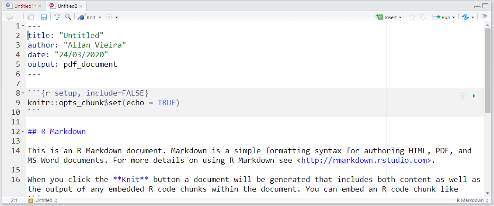
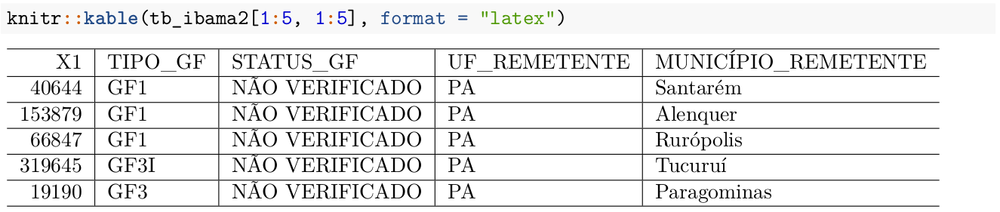

4 Módulo IV
4.1 Manipulação de strings no R com stringr
4.1.1 Introdução
O pacote stringr, como o próprio nome já diz é um pacote para manipulação de strings e também de expressões regulares. Essas duas técnicas são muito importantes em análise de dados, pois muitas vezes vamos lidar com trechos de textos e colunas de caracteres, onde precisamos encontrar padrões de palavras, números, e-mails, telefones, nomes, etc.
Todo o conteúdo referente ao pacote stringr estará baseado na página de introdução ao pacote, disponível em http://stringr.tidyverse.org. Será como uma tradução selecionada e mais amigável do conteúdo disponibilizado pelos autores. Se você desejar se aprofundar mais sobre o assunto, pode recorrer ao livro R for Data Science de Hadley Wickham.
Existem quatro famílias principais de funções no pacote stringr:
- manipulação de caracteres: essas funções nos permite manipular caarcteres individuais dentro de strings e dentro de vetores;
- ferramentas para lidar com espaços em branco, com as quais poderemos adicionar, remover e manipular espaços em branco;
- operações sensíveis ao local do usuário (locale sensitive) - essas operações variam dependendo do local considerando o alfabeto utilizado em cada país;
- funções de pattern matching - essas funções reconhecem 4 “motores” de descrição de padrões. A mais comum são expressões regulares, a qual usaremos neste curso.
4.1.2 Operações com caracteres individuais
4.1.2.1 Obtendo e modificando caracteres
Para obter o tamanho de uma string use string_length():
## [1] 3Para acessar caracteres individuais (posições) ou partes de uma string, podemos usar sub_str(). Esta função recebe como argumentos um vetor de caracteres, uma posição de início e uma posição final. Ambas as posições podem receber um número inteiro positivo ou um inteiro negativo. No caso de a posição passada ser um inteiro positivo, a contagem de posições é feita da esquerda para a direita (do início da string) até se atingir a posição desejada. Quando a posição passada como argumento é um inteiro negativo, a contagem é feita da direita para esquerda (do final da string) até se atingir a posição. Em ambos os casos a forma de avaliação da posição é inclusiva, ou seja, inclui o número que foi passado. Caso as posições passadas ultrapassem os limites da string, o resultado é truncado sem retornar qualquer warning.
## [1] "c" "i"## [1] "bcde" "hifj"str_sub() também pode ser usada para modificar strings:
## [1] "abXdef" "ghXfjk"Para duplicar strings individuais, use str_dup():
## [1] "abXdefabXdef" "ghXfjkghXfjkghXfjk"4.1.2.2 Espaços em branco
As funções a seguir adicionam, removem ou modificanm espaços em branco existentes nas strings.
str_pad()preenche uma string com espaços em branco até uma largura fixa. Os espaços em branco podem ser adicionados à esquerda, direita ou em ambos os lados. Esse tipo de função é bastante útil para gerar arquivos do tipo.fwf, ou seja com larguras/tamanhos fixos para as colunas.
## [1] " abc" " defghi"## [1] "abc " "defghi "## [1] " abc " " defghi "Podemos ainda preencher a string com outros elementos ao invés de espaços em branco:
## [1] "@@@abc@@@@" "@@defghi@@"str_pad() nunca encurtará uma string:
## [1] " abc" "defghi"Observação: Se você quiser assegurar que as strings possuem o mesmo tamanho, combine str_pad() com str_trunc():
## [1] "Curto" "Esta é ..."## [1] " Curto" "Esta é uma string longa"- O oposto de
str_pad()éstr_trim(), que remove os leading e trailing spaces:
## [1] "a" "b" "c"## [1] "a " "b " "c"- Podemos usar
str_wrap()para modificar espaços em branco já existentes de forma a “envelopar” por exemplo um parágrafo de texto para que o comprimento de cada linha seja o mais similar possível. É como se justificássemos o parágrafo.
blah_blah_blah <- str_c(
"`Rosas são vermelhas, ",
"Violetas são azuis, ",
"... Em qualquer combinação de palvras ",
" str_wrap te dá uma luz "
)
# uma alternativa a c() para strings## `Rosas são vermelhas, Violetas são
## azuis, ... Em qualquer combinação de
## palvras str_wrap te dá uma luz4.1.2.3 Locale sensitive
Uma boa parte das funções do pacote stringr são locale sensitive: elas vão se comportar de diferente dependendo do país/região em que o usuário se encontra.
Veja exemplos de funções que transformam letras de caixa baixa para caixa alta e vice-versa:
## [1] "I LIKE HORSES."## [1] "I Like Horses."## [1] "i like horses."# Veja o caso do idioma turco em que há dois tipos de i: um com "ponto" e outro sem
str_to_lower(x, "tr")## [1] "ı like horses."Ordenando strings e seus índices:
## [1] 2 3 1## [1] "i" "k" "y"## [1] "i" "y" "k"Um aspecto importante é que a configuração default de stringr sempre vem com o idioma em inglês para garantir um comportamento idêntico em qualquer sistema ao se utilizar as funções genéricas. Isso é diferente do que normalmente ocorre com base R, onde a opção global locale normalmente varia com a versão regional do sistema operacional e gera bastante confusão quando vamos desenvolver programas.
Para obtermos uma lista das abreviações e regiões disponíveis, é só executarmos stringi::stri_locale_list().
4.1.3 Pattern matching
A vasta maioria das funções de stringr funciona com padrões. Estas funções são parametrizadas pelo tipo de tarefa que elas executam e para quais padrões elas fazem o matching ou pareamento.
4.1.3.1 Tasks
Cada função de matching possui os mesmos dois primeiros argumentos: um vetor de strings para processar e um padrão para fazer o pareamento. O pacote stringr disponibiliza algumas funções para: detectar str_detect(); localizar str_locate(); extrair str_extract(); parear str_match(), substituir str_replace(); e separar strings str_split().
Veja um exemplo com algumas strings e uma Expressão Regular para encontrar números de telefone (dos EUA):
strings <- c(
"apple",
"61 2022 5369",
"61-2020-8753",
"Trabalho: 61-2022-5835; Home: 19.3237.5344"
)
phone <- "([1-9]{2})[- .]([0-9][0-9]{3})[- .]([0-9]{4})"str_detect()detecta a presença ou ausência de um padrão e retorna um vetor lógico.str_subset()retorna os elementos de um vetor de caracteres que fazem a correspondência (matching) com uma expressão regular.
Para sabermos as posições das _strings_contém números, podemos fazer:
## [1] FALSE TRUE TRUE TRUE## [1] "61 2022 5369" "61-2020-8753"
## [3] "Trabalho: 61-2022-5835; Home: 19.3237.5344"str_count()conta o número de correspondências. Para saber quantos números de telefone há em cada string, podemos fazer:
## [1] 0 1 1 2str_locate()localiza a primeira posição do padrão procurado de cada string (elemento) presente no vetor e retorna uma matriz numérica com colunas indicando as posições de começo e fim.str_loacte_all()localiza todas as correspondências, retornando uma lista de matrizes numéricas.
Em qual posição de cada string, os números de telefone estão localizados?
## start end
## [1,] NA NA
## [2,] 1 12
## [3,] 1 12
## [4,] 11 22## [[1]]
## start end
##
## [[2]]
## start end
## [1,] 1 12
##
## [[3]]
## start end
## [1,] 1 12
##
## [[4]]
## start end
## [1,] 11 22
## [2,] 31 42str_extract()extrai o texto correspondente à primeira correspondência dentro da string, retornando um vetor de caracteres.str_extract_all()extrai todos os matches e retorna uma lista de vetores de caracteres.
## [1] NA "61 2022 5369" "61-2020-8753" "61-2022-5835"## [[1]]
## character(0)
##
## [[2]]
## [1] "61 2022 5369"
##
## [[3]]
## [1] "61-2020-8753"
##
## [[4]]
## [1] "61-2022-5835" "19.3237.5344"Note que com str_extract_all(), conseguimos identificar exatamente em que posição do vetor original cada string estava.
## [,1] [,2]
## [1,] "" ""
## [2,] "61 2022 5369" ""
## [3,] "61-2020-8753" ""
## [4,] "61-2022-5835" "19.3237.5344"str_match()extrai grupos de captura de expressões regulares formados por()apenas para a primeira correspondência.str_match_all()extrai grupos de captura de todos os macthes e retorna uma lista de matrizes de caracteres.
## [,1] [,2] [,3] [,4]
## [1,] NA NA NA NA
## [2,] "61 2022 5369" "61" "2022" "5369"
## [3,] "61-2020-8753" "61" "2020" "8753"
## [4,] "61-2022-5835" "61" "2022" "5835"## [[1]]
## [,1] [,2] [,3] [,4]
##
## [[2]]
## [,1] [,2] [,3] [,4]
## [1,] "61 2022 5369" "61" "2022" "5369"
##
## [[3]]
## [,1] [,2] [,3] [,4]
## [1,] "61-2020-8753" "61" "2020" "8753"
##
## [[4]]
## [,1] [,2] [,3] [,4]
## [1,] "61-2022-5835" "61" "2022" "5835"
## [2,] "19.3237.5344" "19" "3237" "5344"str_replace()substitui a primeira ocorrência em que houve matching e retorna um vetor de caracteres.str_replace_all()substitui todos os matches.
Esta e uma função muito interessante de se usar quando estamos trabalhando com dados identificados e desejamos esconder CPF’s, RG’s, números de telefone, etc. Veja um exemplo com os números de telefone.
## [1] "apple" "XX-XXXX-XXXX"
## [3] "XX-XXXX-XXXX" "Trabalho: XX-XXXX-XXXX; Home: 19.3237.5344"## [1] "apple" "XX-XXXX-XXXX"
## [3] "XX-XXXX-XXXX" "Trabalho: XX-XXXX-XXXX; Home: XX-XXXX-XXXX"str_split_fixed()divide a string em um número fixo de partes baseado no padrão passado como argumento e retorna uma matriz de caracteres.str_split()separa uma string em um número variável de partes e retorna uma lista de vetores de caracteres.
## [[1]]
## [1] "a" "b" "c"## [,1] [,2]
## [1,] "a" "b-c"4.1.3.2 Índices e matching:
str_subset() permite extrair elementos de um vetor de strings, caso ele contenha o caractere ou grupo de caracteres informado.
## [1] "apple" "banana" "pear" "pinapple"str_which() retorna a posição do vetor-alvo, em que foi encontrada correspondência para um determinado caractere ou conjunto de caracteres informados.
## [1] 64.1.4 Referências da seção
Wickham, H. (2019). stringr: Simple, Consistent Wrappers for Common String Operations. R package version 1.4.0. https://CRAN.R-project.org/package=stringr.
____. (2020). _stringr vignette: Introduction. URL http://stringr.tidyverse.org
Wickham, H.; Grolemund, G. (2016). R for Data Science: Import, Tidy, Transform, Visualize, and Model Data. O’Reilly Media. december 2016. 522 pages. Disponível em: www.r4ds.co.nz
Estatística Computacional 2 (2015). Notas de aula. Curso de graduação em Estatística. UnB. 1º semestre, 2015.
4.2 Expressões Regulares (REGEX)
4.2.1 Introdução
As linguagens de programação possuem mais de um tipo de mecanismo de busca de padrões em strings. Expressões regulares é o mecanismo mais utilizado. Por isso, será o nosso foco neste curso. No entanto, saiba que o pacote stringr também traz implementações dos outros 3 tipos, os quais descrevemos abaixo:
- Fixed bytewise matching com a função
fixed(); - Locale-sensitive correspondência de caracteres com
coll()(collation search); - Text boundary analysis com a função
boundary().
Se você se interessar pelo assunto, pode buscar mais informações na documentação do pocote stringr.
Mas o que seriam exatamente, então, Expressões Regulares?
Expessões Regulares são formas concisas e flexíveis para descrever padrões (que estamos buscando) em strings. Nesta seção, nós vamos descrever os principais aspectos relacionados a construção de expressões regulares. Para isso utilizaremos alguns dos exemplos descritos nas vignettes do pacote stringr e parte de minhas notas de aula do Curso de Computação Estatística da UnB.
Primeiro faremos uma introdução geral sobre expressões regulares e depois veremos exemplos utilizando o pacote stringr.
Por que expressões regulares são importantes?
Expressões regulares nos permitem descrever em termos mais gerais o que desejamos buscar em uma string. Normalmente, é mais eficiente usarmos expressões regulares, porque se buscarmos caracteres simples, só obteremos a correspondência exata para aquele caractere. Já pensou em como faríamos para buscar apenas números de telefone, endereços de e-mail, CNPJ’s ou CPF’s no meio de dados (por exemplo páginas da internet) que não estão exatamente organizados em colunas?
Cabe ressaltar que expressões regulares é uma técnica usada praticamente em todo o mundo da programação. Não é uma particularidade somente da linguagem R.
As expressões regulares (regex), em geral, são construídas da combinação de 3 componentes:
- literal characters: que somente vão sofrer matching se houver nos dados caracteres literais idênticos;
- character classes: que permitem o matching por múltiplos caracteres - são compostas de caracteres dentro de dois colchetes
[ ];
- character classes: que permitem o matching por múltiplos caracteres - são compostas de caracteres dentro de dois colchetes
- modifiers ou anchors: que vão operar nos caracteres, nas classes e em combinações dos dois.
4.2.2 Exemplos de REGEX usando stringr
4.2.2.1 Correspondências literais (basic match/literal characters)
O padrão mais simples para fazer o matching é:
## [1] NA "an" NAPodemos ignorar letras maiúsculas e minúsculas com ignore_case = TRUE:
## [1] TRUE FALSE FALSE## [1] TRUE TRUE TRUESeguindo com os exemplos, o próximo passo é conhecermos o papel desempenhado por .. Sua função é buscar qualquer caractere com exceção de uma nova linha (\n):
## [1] "maç" "ban" NAMas se você quiser encontrar até mesmo caracteres que indicam uma nova linha, pode “setar” dotall = TRUE dentro da função responsável pelo mecanismo de matching, que é a função regex():
## [1] FALSE## [1] TRUE4.2.2.2 Escaping characters ou caracteres de escape
Se . faz o matching de qualquer caractere, como podemos fazer o matching literal de um ponto “.” nos dados? Teremos de usar um caractere de escape para dizer ao R que queremos um matching literal e não usar o comportamento especial de .. Em REGEX, utiliza-se uma barra invertida \ para tal fim.
Então, para buscarmos um simples “.” nos dados, usamos \.. Mas há um porém: a barra invertida também é tratada como um caractere especial no R quando se trata de strings_. Portanto, teríamos que acrescentar outra barra invertida formando a string \\. de modo a fazermos o matching com um simples ponto nos dados.
## \.## [1] NA "a.c" NAPara te ajudar a entender quantas barras você precisará escrever no código, vamos pensar que existem dois mecanismos diferentes: o interpretador do R e o mecanismo do REGEX. Quando você envia uma expressão regular para o interpretador, ele passará por um filtro em que serão aplicadas as regras do R. Passado esse primeiro filtro, a expressão segue para uma nova instância, onde sofrerá ação do mecanismo de REGEX.
Pense nessas etapas como um pedágio. Para cada barra invertida que precisa chegar na última etapa do pedágio, você precisa também de uma barra \ para “pagar o pedágio” da primeira etapa. As barras invertidas \, são, portanto, a sua moeda de troca e você não pode levar nem mais nem menos “dinheiro” do que precisa. Se a expressão tem que chegar na etapa de REGEX como \., para que a última barra seja encarada como um caractere especial que descaracteriza o funcionamento especial do ., fazendo assim um matching literal, você precisa enviar uma barra \ a mais para que seja consumida na etapa do interpretador do R. Por isso, no seu código, você deve escrever \\..
Já pensou, então, em como faríamos para fazer o matching literal de uma barra invertida em uma string?
Vamos pensar novamente como um pedágio, começando da última etapa para primeira. No mecanismo de REGEX, última etapa do pedágio, a expressão deve chegar com duas barras \\: a da esquerda fazendo função de caractere especial, que elimina a função especial da barra da direita. Portanto, para carregar duas barras até o final do processo, você precisa de outras duas barras \\ para serem consumidas na etapa do interpretador do R. Portanto, para fazer o matching literal de uma barra invertida em uma string, seu código deve ser escrtio como \\\\.
O que acontece, na verdade, é que o interpretador separa cada par de barras, fazendo com que a da esquerda tire o funcionamento especial da barra da direita em cada par. Desta forma, chegam apenas duas barras no mecanismo de REGEX.
## a\b## [1] "\\"A partir de agora, quando formos nos referir à expressões regulares, usaremos a forma apenas com uma \. No entanto, saiba que em seu código nas funções do R, você deverá adicionar mais uma barra invertida \\.
4.2.2.3 Matching de múltiplos caracteres (classes)
Primeiro, veremos alguns atalhos para classes de caracteres:
| atalhos | classes |
|---|---|
| \w | alfanuméricos e _ (qualquer palavra) |
| \W | não-alfanuméricos (qualquer coisa diferente de palavras e _) |
| \d | digitos |
| \D | não-dígitos |
| \s | espaço |
| \S | não-espaço |
Passemos aos exemplos:
## [1] "Don" "t" "eat" "that"## [1] "Don" "t" "eat" "that" ""## [1] "1" "2" "3"## [1] "Texto \t com\n\t\tespaçamento \f ruim"## [1] "Texto com espaçamento ruim"Um outro atalho interessante é \b que busca por limites/bordas de palavras, ou seja, transições entre caracteres de palavras e caracteres de não-palavras. \B faz o oposto.
## [1] "_The_ _quick_ _brown_ _fox_"## [1] "T_h_e q_u_i_c_k b_r_o_w_n f_o_x"Você pode consultar outros atalhos interessantes nesta vignette do pacote stringr.
Há a possibilidade, ainda, de criarmos nossas próprias classes usando []:
[abc]: busca a correspondência de a, b ou c;[a-z]: busca qualquer caractere minúsculo entre a e z;[A-Z]: busca qualquer caractere maiúsculo entre A e Z;[^abc]: busca qualquer coisa exceto a, b, ou c;[\^\-]: busca^ou-. Lembre-se de adicionar mais uma barra invertida na frente de cada uma das barras ao passar o comando no R)
Há ainda diversas classes pré-construídas que podemos usar com os colchetes:
[:punct:]: pontuação;[:alpha:]: letras;[:lower:]: letras minúsculas;[:upper:]: LETRAS MAIÚSCULAS;
[:digit:]: digitos;[:alnum:]: letras e números.[:cntrl:]: caracteres de controle.[:graph:]: letras, números e pontuação.[:print:]: letras, números, pontuação e espaço em branco.[:space:]: caracteres de espaço (equivalente a\s).[:blank:]: espaço e tab.
Essas expressões vão dentro de outros colchetes:
## [[1]]
## [1] "1" "2" "3" "4"
##
## [[2]]
## character(0)
##
## [[3]]
## character(0)
##
## [[4]]
## character(0)
##
## [[5]]
## character(0)## [[1]]
## [1] "1" "2" "3" "4"
##
## [[2]]
## character(0)
##
## [[3]]
## character(0)
##
## [[4]]
## character(0)
##
## [[5]]
## [1] "á"## [[1]]
## [1] "1" "2" "3" "4"
##
## [[2]]
## character(0)
##
## [[3]]
## character(0)
##
## [[4]]
## character(0)
##
## [[5]]
## [1] "t" "d"## [[1]]
## character(0)
##
## [[2]]
## [1] "R"
##
## [[3]]
## [1] "I" "P" "E" "A"
##
## [[4]]
## character(0)
##
## [[5]]
## [1] "O" "b" "m"4.2.2.4 Operador Alternation
| é o operador de alternância que permite escolher entre uma ou mais correspondências possíveis. abc|def vai fazer o matching com abc ou def.
## [1] TRUE TRUE FALSE4.2.2.5 Agrupamento
Parenteses podem servir para alterar regras de precedência ou formar grupos. O mesmo que vimos no Módulo 1 para alterar regras de precedência serve para REGEX:
## [1] "gre" "ay"## [1] "grey" "gray"Parênteses definem grupos e podemos retro-referenciar esses grupos utilizando \Nro_do_grupo para indicar que os grupos podem se repetir mais vezes, bem como a ordem na qual se repetiriam na string.
pattern <- "(1|2)(3|4)\\1"
combinacoes <- list("1213", "1413", "2324", "1111", "2222", "1415", "1313", "1331")
combinacoes %>%
str_subset(pattern)## [1] "1413" "2324" "1415" "1313"## [1] "1313"## [1] "1331"4.2.2.6 Âncoras ou modificadores
Ancorar significa estabelecer um padrão para o início ou final da string que estamos buscando.
^busca o padrão no começo da string;$busca o padrão no final da string.
## [1] "m" NA NA## [1] NA "a" "a"4.2.2.7 Repetições
Pode-se controlar quantas vezes um padrão aparece em determinada parte da string com:
?: 0 ou 1.+: 1 ou mais.*: 0 ou mais.
## [1] "CC"## [1] "CCC"## [1] "CLXXX"## [,1] [,2]
## [1,] "nana" "na"Podemos especificar o número exato de repetições que esperamos com:
{n}: exatamente \(n\) vezes;{n,}: \(n\) vezes ou mais;{n,m}: entre \(n\) e \(m\) vezes.
## [1] "CC"## [1] "CCC"## [1] "CCC"Há diversos outros padrões e expressões que podem ser usadas. Busque ??stringi_search-regex ou visite o site de stringr.
4.2.3 Referências da seção
Wickham, H. (2019). stringr: Simple, Consistent Wrappers for Common String Operations. R package version 1.4.0. https://CRAN.R-project.org/package=stringr.
____. (2020). _stringr vignette: Introduction. URL http://stringr.tidyverse.org
Wickham, H.; Grolemund, G. (2016). R for Data Science: Import, Tidy, Transform, Visualize, and Model Data. O’Reilly Media. december 2016. 522 pages. Disponível em: www.r4ds.co.nz
Estatística Computacional 2 (2015). Notas de aula. Curso de graduação em Estatística. UnB. 1º semestre, 2015.
4.3 Relatórios e pesquisa reproduzível com rmarkdown
4.3.1 Introdução
Chegamos a um ponto do curso em que já possuímos um ferramental poderoso para analisar e tratar dados. No entanto, nos dias atuais, há uma outra etapa tão importante quanto as anteriores na Ciência de Dados: compartilhar e comunicar suas análises.
Para este objetivo, o R certamente é a ferramenta mais poderosa nos dias atuais: você pode integrar desde a etapa de análise de dados até o compartilhamento de seus códigos, gráficos e constatações por meio de relatórios, slides, artigos em \(\TeX\) e até mesmo livros. Esta apostila mesmo foi toda confeccionada dentro da linguagem R.
Nesta seção, vamos focar na produção de relatórios. Veremos também como confeccionar esses relatórios de modo que eles se adequem automaticamente a mudanças nos dados que originam sua análise. Além dessa questão prática, todos os dados e códigos utilizados numa análise podem ser compartilhados com sua equipe, o que reforça o carater de reproducibilidade da linguagem R. Qualquer outra pessoa poderá facilmente replicar e verificar/validar os resultados obtidos por você.
A ferramenta que nos permite fazer a maioria dessas coisas que citamos acima é o pacote rmarkdown. Ele é um pacote que gravita em torno do core do tidyverse. O rmarkdown une escrita de texto e de códigos num único lugar, por meio de linaguagem de marcação (markdown). A linguagem de marcação possui uma sintaxe bastante simples e que torna a produção de texto bem ágil, diferentemente do que ocorre com \(HTML\) e \(\LaTeX\), por exemplo. Isso faz com que você não precise sair do RStudio ou mesmo trocar de janela ou abas para incluir texto, figuras, outputs ou pedaços (chunk) de códigos em um documento do tipo R Markdown. O pacote rmarkdown é tão supreendente que a partir dele surgiram pacotes derivados que permitem a criação de sites e blogs com blogdown (veja https://allanvc.github.io) e a confecção de livros e apostilas como esta que você está lendo por meio do pacote bookdown, além de outros.
Para começar a confecionar um relatório em R Markdown, você precisa criar um novo arquivo do tipo .Rmd. Clique em  , como você normalmente faz para criar um script, só que, desta vez selecione “R Markdown”
, como você normalmente faz para criar um script, só que, desta vez selecione “R Markdown”  .
.
Uma nova janela será aberta no RStudio, em que você deverá escolher que tipo de arquivo de output deseja, se HTML, PDF ou .docx, bem como seu nome e o título do seu relatório. Vamos escolher PDF.

Note que automaticamente será criada uma nova aba no RStudio, com um modelo de relatório .Rmd pré-formatado.
ATENÇÃO: Se esta for sua primeira vez utilizando R Markdown no Windows, o próprio RStudio irá oferecer a instalação de alguns pacotes necessários (e suas dependências) para rodarmos o rmarkdown. Dentre eles estará o pacote tinytex. Trata-se de um pacote que realiza a instalação mínima de bibliotecas \(\LaTeX\) necessárias para a geração de documentos .pdf a partir do R Markdown. Após a instalação dos pacotes, basta executar no console o código abaixo e depois reiniciar sua sessão do RStudio.
Na aba criada, estão todos os dados que você informou anteriormente e também uma série de exemplos criados automaticamente retratando o funcionamento de um simples relatório em R Markdown. Note que todo o texto é editável.

Os documentos são gerados utilizando o pacote knitr. Este pacote funciona como um pacote de apoio de rmarkdown, mas você não precisa conhecê-lo a fundo. Knit em inglês significa tricotar ou unir. E é justamente isso que ele faz, ele costura e une todos os elementos que você vier a construir ou programar com R Markdown. Se você já quiser gerar um relatório a partir do exemplo apresentado a você ao criar um novo arquivo .Rmd, você podê fazê-lo clicando no botão Knit  na janela do RStudio. Após escolher um nome e salvar seu arquivo
na janela do RStudio. Após escolher um nome e salvar seu arquivo .Rmd, se você escolheu a opção PDF, você terá um arquivo de extensão .pdf. Faça testes alterando os arquivos de destino: .html e .docx direto no botão Knit.
DICA: A cada comando novo que você aprender ao longo dessa seção, sugerimos gerar um novo relatório, de modo que você possa companhar as modificações feitas no documento. Por isso, sugerimos também que você apague todo o conteúdo do relatório de sugestão criado ao abrir um novo documento .Rmd, mantendo somente os dados do cabeçalho: title, author, date e output.
4.3.2 Cabeçalho
No cabeçalho você pode especificar todos os aspectos técnicos de formatação do seu texto em R Markdown. Existem diversas opções, mas focaremos nas mais básicas que são as que aparecem na tela neste momento.
titlecontém o título de seu documento;authoro seu nome;datea data de geração do documento;outputo tipo de documento a ser gerado, se HTML, PDF ou Word.
Alguns truques úteis:
- Caso você queira acrescentar um co-autor, use:
author:
- Nome do Autor1
- Nome do Autor2- Para adicionar um subtítulo, basta escrever:
title: "Seu Título"
subtitle: "Subtítulo para o relatório"- Para não ter que ficar alterando a data manualmente, toda vez que você executa o Knit, utiliza a função
format()em conjunto comSys.time(). Note que esse código é passado entre sinais de crase``.
date: "`r format(Sys.time(), '%d %B %Y')`"4.3.3 Formatação de Texto
A sintaxe de formatação de texto do R Markdown é muito simples. Por isso a produção de textos com ele é muito rápida. Isso vem com o custo de não se ter tanta flexibilidade de alteração de elementos textuais como numa linguagem como \(\LaTeX\), mas ainda sim, as possibilidades de formatação são bem consideráveis.
4.3.3.1 Títulos
O símbolo # é utilizado para definir títulos. A cada # acrescentado, você desce uma hierarquia e cria um subtítulo do título anterior. Quanto menos # houver antes do seu título, maior a hierarquia e consequentemente maior a fonte.
# Título do Artigo
## Subtítulo
### Seção
#### Subseção4.3.3.2 Parágrafos
Para redigir um parágrafo basta começar a escrever um texto qualquer. Para adicionar parágrafos basta pular uma linha, deixando um espaço em branco entre os parágrafos
Este é o primeiro parágrafo do seu texto. Você pode escrever normalmente e ele
aparecerá no seu relatório.
Após pular uma linha, você começa um novo parágrafo. Acrescente as ideias que você
desejar neste segundo parágrafo4.3.3.3 Formatação da fonte
Você pode aplicar formatações em itálico e negrito à palavras espécificas, expressões ou trechos completos de seu texto, colocando a palvra ou trecho em questão entre asteriscos.
Para formatação em negrito, utilize **palavra ou trecho**: palavra ou trecho.
Para a formatação em itálico, utilize *palavra ou trecho*: palavra ou trecho.
Você pode obter o mesmo efeito utilizando underline no lugar dos asteriscos, como nestes exemplos _palavra ou trecho_: palavra ou trecho; e __palavra ou trecho__: palavra ou trecho.
4.3.3.4 Notas de rodapé
Notas de rodapé podem ser inseridas no testo utilizando o esquema palavra^[Texto que irá para a nota de rodapé sobre a palavra.]
Nesse texto vamos inserir uma nota de rodapé sobre a palavra Estatística^[Estatística
é a disciplina que consiste na coleta, organização, análise e apresentação de dados.]4.3.3.5 Confecção de listas e enumeração de itens
4.3.3.5.1 Listas não-numeradas
Para criar listas não-numeradas, podemos utilizar tanto * quanto -:
* item X
* item Y
* item Z- item X
- item Y
- item Z
- item X
- item Y
- item Z- item X
- item Y
- item Z
Nas listas não-numeradas, para criar subitens, você deve dar 4 espaços ou TAB a partir da margem esquerda e utilizar - ou +:
* item X
- subitem
* item Y
- subitem
+ subsubitem
* item Z
+ subitem
+ subitem- item X
- subitem
- item Y
- subitem
- subsubitem
- subitem
- item Z
- subitem
- subitem
4.3.3.5.2 Listas numeradas
Para criar listas numeradas, utilizamos o numeral acompanhado de ponto: 1., 2., 3. e assim por diante. Para a criação de subitens, no caso de listas numeradas, utilize dois TAB ou 4 espaços seguido de -.
1. item A
- subitem
2. item B
- subitem
- subitem
2. item C
- subitem
- subitem
- item A
- subitem
- item B
- subitem
- subitem
- item C
- subitem
- subitem
4.3.3.6 Tabelas
Tabelas podem ser adicionadas utilizando | para separar as colunas e ------ para separar o cabeçalho, contendo os nomes das colunas. Note que os as barras retas que separam as colunas devem estar alinhadas.
coluna1 | coluna2 | coluna3
--------|----------|--------
Nome1 | Endereço1| Valor1
Nome2 | Endereço2| Valor2
Nome3 | Endereço3| Valor3
| coluna1 | coluna2 | coluna3 |
|---|---|---|
| Nome1 | Endereço1 | Valor1 |
| Nome2 | Endereço2 | Valor2 |
| Nome3 | Endereço3 | Valor3 |
4.3.4 Inserção de figuras externas
Você pode incluir em seu relatório figuras externas, ou seja, figuras que não são geradas a partir do R. Você pode referenciar tanto figuras que estão armazenadas localmente em sua máquina, quanto figuras disponíveis na web.


Descrição Figura Web
Logo de um dos meus pacotes
4.3.5 Inserção de links
O processo de inserção de links, segue uma abordagem muito parecida a de inserção de figuras externas. A diferença é que você não precisará mais de !. Além disso, apenas o texto dentro dos colchetes [] é que aparecerá ao leitor. Ao ser clicado, ele será direcionado para o link a ser passado dentro dos parênteses ().
Clique neste [LINK](https://allanvc.github.io).
Arquivo disponível em [https://allanvc.github.io](https://allanvc.github.io).Clique neste LINK.
Arquivo disponível em https://allanvc.github.io.
4.3.6 Fórmulas matemáticas
Você pode inserir fórmulas matemáticas utilizando os princípios de \(\LaTeX\). Veja a função densidade de probabilidade de uma distribuição Normal. Para isso, você deve passar a fórmula entre $$ duplos. Note como a formatação fica elegante.
$$
f(x;\mu,\sigma^2) = \frac{1}{\sigma\sqrt{2\pi}}
e^{ -\frac{1}{2}\left(\frac{x-\mu}{\sigma}\right)^2 }
$$\[ f(x;\mu,\sigma^2) = \frac{1}{\sigma\sqrt{2\pi}} e^{ -\frac{1}{2}\left(\frac{x-\mu}{\sigma}\right)^2 } \]
Se você quiser apresentar alguma fórmula no meio do texto de um parágrafo, passe a fórmula apenas entre dois $ simples:
A função densidade de probabilidade da Distribuição Normal é dada por $f(x;\mu,\sigma^2) =
\frac{1}{\sigma\sqrt{2\pi}} e^{ -\frac{1}{2}\left(\frac{x-\mu}{\sigma}\right)^2 }$.A função densidade de probabilidade da Distribuição Normal é dada por \(f(x;\mu,\sigma^2) = \frac{1}{\sigma\sqrt{2\pi}} e^{ -\frac{1}{2}\left(\frac{x-\mu}{\sigma}\right)^2 }\).
4.3.7 Inserção e execução de códigos
A maior vantagem de R Markdown provavelmente é a possibilidade de juntarmos, código, outputs e texto tudo no mesmo lugar de forma muito simples e natural.
4.3.7.1 Inserção simples
Para apresentar o seu código ao longo de uma linha, sem necessariamente executá-lo, utilize crases simples.
No R, podemos criar um vetor numérico x através do código `x <- c(1:10)`.No R, podemos criar um vetor numérico x através do código x <- c(1:10).
Se precisamos apresentar um trecho maior de código, podemos fazê-lo entre crases triplas ```, formado um bloco:
Esse é um trecho de código maior:
```
x <- c(1:10)
sum(x)
```
O que resulta em:
Esse é um trecho de código maior:
x <- c(1:10)
sum(x)4.3.7.2 Inserções com execução e outros controles
Para começar a apresentar seus códigos juntamente com os respectivos outputs (o que incluem gráficos), utilizamos o que chamamos de chunks, que nada mais são que pedaços de códigos a serem executados durante o processamento do documento. rmarkdown e sua interação com o RStudio são tão sofisticados que, se você possuir outras linguagens instaladas na sua máquina, você consegue inclusive, alterar a forma de exibição de linguagem R para Python por exemplo. No entanto, nosso foco será apenas na configuração dos parâmetros mais utilizados.
Inicialmente, para criar um chunk de código R, você deve utilizar as mesmas crases triplas ``` do exemplo anterior, acompanhadas da anotação {r}. Não se esqueça de fechar o chunk com as mesmas aspas triplas.
Como resultado, temos agora a impressão do output do código anterior:
## [1] 55DICA: Também é possível executar trechos de código inline, no meio dos parágrafos. Para isso, utilizamos `r sum(x)`
Por exemplo: A soma do vetor x é `r sum(x)`.
O que resulta em:
A soma do vetor x é 55.
4.3.7.2.1 Principais opções de chunk
As principais opções de chunk são:
results: especifica como, e se, serão mostrados os resultados do chunk;- opções:
markup(default): exibe os resultados normalmentehide: não exibe os outputs no relatório finalhold: exibe os resultados apenas ao final do relatórioasis: não reformata os resultados, exibindo (útil quando os outputs são códigos HTML, por exemplo)
- opções:
echo: especifica se o código do chunk deve será exibido- opções:
TRUE(default): exibe os códigos acima do outputFALSE: exibe apenas o output gerado pelo chunk
- opções:
eval: especifica se o chunk será executado ou não- opções:
TRUE(default): executa o chunkFALSE: não executa o chunk (útil quando desejamos exibir apenas os códigos e não seu output)
- opções:
messageewarning: define se as mensagens e demais avisos gerados durante a excução do código- opções:
TRUE(default): exibe mensagens e avisos gerados durante a excução do chunkFALSE: suprime a exibição de mensagens e warnings (útil para suprimir mensagens de carregamento de pacotes)
- opções:
fig.cap: especifica uma descrição para a figura gerada no chunkfig.align: define o alinhamento da figura gerada no chunk- opções:
center(default): alinhamento no centro do documentoleft: alinhamento à esquerdaright: alinhamento à direita
- opções:
fig.heightefig.width: define a altura e a largura da figura em polegadas - default é tamanho 7
Se nada for especificado para uma determinada opção, as configurações default são utlizadas na avaliação do código e exibição dos resultados.
Essas opções devem ser passadas no cabeçalho dos chunks, ao lado da letra r e dentro de das chaves {}, por exemplo:
Você pode também atribuir nomes aos seus chunks. Isso é bastante recomendado quando se está produzindo relatórios relativamente grandes com vários chunks, pois facilitará a identificação de eventuais erros durante o processo de geração do documento. Os nomes devem ser informados antes da primeira vírgula, a um espço de distância da letra r: {r nome_do_chunk, opções}
Vejamos alguns exemplos, em que criamos alguns chunks com nome, para realizar a leitura de uma das bases dos módulos anteriores e plotarmos um gráfico utilizando gggplot2:
```{r leitura, message=FALSE}
library(readr)
library(dplyr)
tb_ibama <- read_csv(file="https://raw.githubusercontent.com/allanvc/book_ADR-T/master/datasets/PA%20GF%202017%20jan-jun_editada.csv",
col_types = cols(
X1 = col_double(),
TIPO_GF = col_character(),
STATUS_GF = col_character(),
UF_REMETENTE = col_character(),
MUNICÍPIO_REMETENTE = col_character(),
TIPO_DESTINO = col_character(),
CEPROF_DESTINATÁRIO = col_character(),
UF_DESTINATÁRIO = col_character(),
MUNICÍPIO_DESTINATÁRIO = col_character(),
N_AUTORIZAÇÃO = col_character(),
PROCESSO = col_character(),
EMISSAO = col_integer(),
NOME_CIENTÍFICO = col_character(),
PRODUTO = col_character(),
VOLUME = col_double(),
UNID = col_character(),
PRECO_TOTAL = col_double()
)
)
tb_ibama$STATUS_GF[1:50000] <- rep("NÃO VERIFICADO", 50000)
tb_ibama2 <- mutate(tb_ibama,
preco_unidade = PRECO_TOTAL / VOLUME,
preco_unidade_vezes_1000 = preco_unidade * 1000
)
``````{r plot, fig.cap="Fonte: Ibama", fig.height=5, fig.width=5, fig.align="left"}
library(ggplot2)
tb_ibama2 %>%
ggplot()+
geom_point(mapping=aes(x=VOLUME, y=PRECO_TOTAL, colour=TIPO_GF))+
labs(title="Título do gráfico",
x = "Rótulo eixo x",
y = "Rótulo eixo y",
colour = "Título da Legenda")+
theme_bw()
```O que resultaria em:
library(readr)
library(dplyr)
tb_ibama <- read_csv(file="https://raw.githubusercontent.com/allanvc/book_ADR-T/master/datasets/PA%20GF%202017%20jan-jun_editada.csv",
col_types = cols(
X1 = col_double(),
TIPO_GF = col_character(),
STATUS_GF = col_character(),
UF_REMETENTE = col_character(),
MUNICÍPIO_REMETENTE = col_character(),
TIPO_DESTINO = col_character(),
CEPROF_DESTINATÁRIO = col_character(),
UF_DESTINATÁRIO = col_character(),
MUNICÍPIO_DESTINATÁRIO = col_character(),
N_AUTORIZAÇÃO = col_character(),
PROCESSO = col_character(),
EMISSAO = col_integer(),
NOME_CIENTÍFICO = col_character(),
PRODUTO = col_character(),
VOLUME = col_double(),
UNID = col_character(),
PRECO_TOTAL = col_double()
)
)
tb_ibama$STATUS_GF[1:50000] <- rep("NÃO VERIFICADO", 50000)
tb_ibama2 <- mutate(tb_ibama,
preco_unidade = PRECO_TOTAL / VOLUME,
preco_unidade_vezes_1000 = preco_unidade * 1000
)library(ggplot2)
tb_ibama2 %>%
ggplot()+
geom_point(mapping=aes(x=VOLUME, y=PRECO_TOTAL, colour=TIPO_GF))+
labs(title="Título do gráfico",
x = "Rótulo eixo x",
y = "Rótulo eixo y",
colour = "Título da Legenda")+
theme_bw()Figure 4.1: Fonte: Ibama
4.3.8 Tabelas mais sofisticadas
Quando usamos um tibble ou data frame e o output de destino é um arquivo HTML, nos beneficiamos do fato de o R Markdown reconhecer o formato e imprimir o conteúdo do tibble ou data frame como uma tabela do R Markdown. Para isso basta incluir as seguintes linhas no cabeçalho YAML, alterando paged, kable ou tibble. Vamos ver um exemplo com paged
---
title: "Título"
output:
html_document:
df_print: <opção>
---
Vamos utilizar a opção df_print: paged, que vai fazer com a tabela seja imprida de forma paginada, exibindo apenas algumas linhas (e colunas) de cada vez e, permitindo aos usuários navegarem por seu conteúdo de forma interativa. Após alterar o cabeçalho, basta chamar o objeto tb_ibama2 de dentro de um chunk.
Note que os argumentos cols.print e rows.print controlam o número de colunas e linhas a serem exibidos em cada paginação.
O resultado será o seguinte:

DICA: Se você deseja controlar melhor o output das tabelas, ou busca gerar tabelas mais sofisticadas em relatórios PDF ou Word, podemos utilizar a função knitr::kable dentro de um chunk do R Markdown.
No código acima, apresentamos um extrato dos dados (5 primeiras linhas e 5 primeiras colunas) do data frame de nome tb_ibama2 que utilizamos ao longo do curso. A opção format = latex é adequada para a produção de tabelas no estilo \(\LaTeX\).

Se objetivo for deixar a tabela com uma aparência ainda melhor você pode utilizar a opção booktabs = TRUE, o que faz com que a engine do pandoc utilize o pacote \(\LaTeX\) booktabs para gerar a tabela. Há diversas outras opções para melhorar ainda mais o estilo da tabela, como acrescentar notas de rodapé, títulos, cores, etc. Para isso você deve investigar outras opções da própria função kable e o pacote kableExtra que amplia as possibilidades de customização.
4.3.9 Referências da seção
Allaire, J. J.; Xie, Y.; McPherson, J.; Luraschi, J.; Ushey, K.; Atkins, A.; Wickham, H.; Cheng, J.; Chang, W.; Iannone, R. (2019). rmarkdown: Dynamic Documents for R. R package version 1.13. URL https://rmarkdown.rstudio.com.
Xie, Y. (2019). R MArkdown Cookbook. CRS Press. Disponível em: https://bookdown.org/yihui/rmarkdown-cookbook/
Xie Y.; Allaire, J. J.; Grolemund, G. (2018). R Markdown: The Definitive Guide. Boca Raton, Florida: Chapman; Hall/CRC. Disponível em: https://bookdown.org/yihui/rmarkdown.
Mayer F.; Zeviani, W. (2019). Pandoc e Markdown. Cursos. UFPR. Disponível em: http://cursos.leg.ufpr.br/prr/capMarkdown.html#.
R MARKDOWN REFERENCE GUIDE. Disponível em: https://rstudio.com/wp-content/uploads/2015/03/rmarkdown-reference.pdf.
4.3.10 Exercícios
- Escolha um relatório no qual você trabalhou recentemente e tente reproduzir todo ele ou apenas um trecho utilizando os conhecimentos de R Markdown. Dê preferência a trabalhos que envolvam dados que permitam a aplicação daq maior parte das técnicas vistas ao longo do curso.